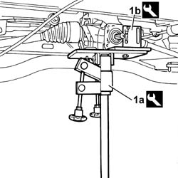
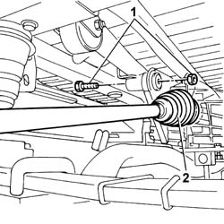
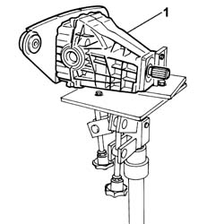
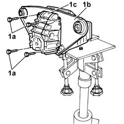

2720C10 DIFFERENCIAL UNIT - R.R.
- Path
- Procedures > 27 AXLE > 2720 REAR AXLE CASING -SEMISHAFT AND DIFFERENTIAL > 2720C REAR DIFFERENTIAL UNIT > 2720C10 DIFFERENCIAL UNIT - R.R.
- Kind
- repair procedure (removal / refitting; the operation number is the code)
- Applies to
- engines: 2.0 16V, 2.8 JTD 8V; all production periods
- Interactive page
- https://sloeber94.github.io/elrnDB-fDct/en/#/244001069
Applies to: engines: 2.0 16V, 2.8 JTD 8V; all production periods; only with equipment: 4X4
 Removing
Removing
 Refitting
Refitting1. Position a suitable hydraulic lift (1a) with the appropriate mounting brackets (1b) and secure them to the differential.
Description | Code | Function | |
|---|---|---|---|
1a | Hydraulic lift | 1.870.835.001 | Removal of rear differential |
Description | Code | Function | |
|---|---|---|---|
1b | Mounting brackets | 1.870.847.000 | Removal of rear differential |

Applies to: engines: 2.0 16V, 2.8 JTD 8V; all production periods; only with equipment: 4X4
1. Undo the bolts fixing the differential unit mounting bracket to the underbody.
- Gently lower the hydraulic lift in such a way as to create a space that is sufficient to be able to remove the driveshafts.
2. Remove the driveshafts from the differential housing.

Applies to: engines: 2.0 16V, 2.8 JTD 8V; all production periods; only with equipment: 4X4
1. Lower the hydraulic lift and remove the differential unit complete with mounting bracket.

Applies to: engines: 2.0 16V, 2.8 JTD 8V; all production periods; only with equipment: 4X4
1. Undo the fixing bolts (1a) and separate the fixing bracket (1b) from the differential (1c).

Applies to: engines: 2.0 16V, 2.8 JTD 8V; all production periods
Refitting
Removing- Fit the mounting bracket on the differential and tighten the fixing bolts.
- With the aid of the hydraulic lift and the mounting brackets, raise the differential unit and fit the driveshafts in place.
- Tighten the bolts securing the differential unit to the underbody.
- Remove the hydraulic lift with the mounting brackets.
Description | Code | Function | |
|---|---|---|---|
- | Hydraulic lift | 1.870.835.001 | Removal of rear differential |
Description | Code | Function | |
|---|---|---|---|
- | Mounting brackets | 1.870.847.000 | Removal of rear differential |